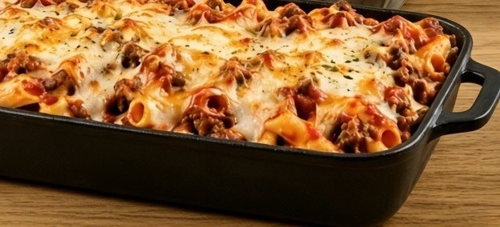

Baked Ziti Casserole

- Meal
- Dinner
- Serves
- 8 (leftovers for household of 6)
- Protein
- ground beef
- Cook
- oven · ~25 min active / ~55 min total · easy
- Make-ahead / leftovers
- yes / yes
- Mediterranean
- no
- WW tier
- moderate
- Status
- Trying out (probation)
Beef, marinara, ricotta, mozzarella, and Parmesan baked with ziti. Not Turkey Baked Ziti (turkey, olive oil, crushed tomatoes — house Med version) and not Meatlovers Pizza Casserole (pepperoni + sausage, no ricotta).
Ingredients
- 1 lb ziti pasta
- 1 lb ground beef
- 2 cups marinara sauce
- 1 cup ricotta cheese
- 2 cups shredded mozzarella cheese
- 1/2 cup grated Parmesan cheese
- 1 tsp Italian seasoning
- 1/2 tsp garlic powder
Method
Source method (Amanda Flavours thread) — same bake for all six; only the mix and a couple of assembly notes change.
- Prep: Preheat oven to 375°F (190°C). Grease a 9×13-inch dish. Brown the ground beef; drain. Cook the ziti until slightly underdone; drain.
- Mix: In a bowl, combine the cooked beef, ziti, marinara, ricotta, Italian seasoning, garlic powder, half the mozzarella, and half the Parmesan. Stir until evenly mixed.
- Assemble: Spread the mixture in the dish. Top with the remaining mozzarella and Parmesan.
- Bake uncovered 25–30 minutes until cheese is melted and bubbly. Cover loosely with foil if the top browns too fast.
- Rest 5 minutes before serving so it sets.
Notes
- Servings: source says serves 8 / bake 30 min. Household is 6 — keep the original amounts; leftovers cover lunches.
- Red meat: ground beef as the main counts toward the ≤2 red/processed-meat cap.
- Cooked tomato: marinara counts toward the weekly cooked-tomato ("pasta night = prostate night") target.
- WW tier moderate: beef + ricotta/mozzarella/Parmesan, but not processed-meat-loaded like Meatlovers Pizza Casserole. Classed with the house pasta bakes (Turkey Baked Ziti is the lighter turkey/Med sibling).
- Mediterranean ✗: red meat ✗, refined pasta ✗; tomato ✓; no olive oil called for ✗ (1 of 4). Prefer Turkey Baked Ziti when the week needs a Med pasta night.
- a fish-free plate / hidden fish: no fish in the recipe. Check marinara labels for anchovy (some "Italian" sauces include it); pick another jar if listed.
- Distinct from Turkey Baked Ziti — keep both; do not overwrite.
- Nutrition: not given by the source; none listed here.